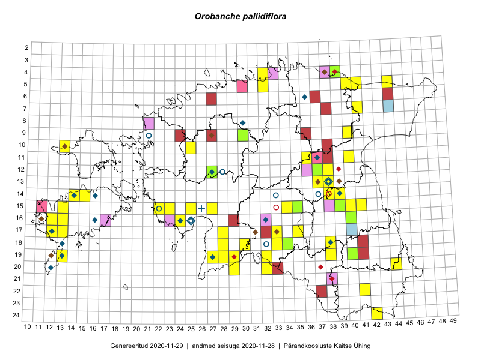

Orobanche pallidiflora
Uuendatud: 2016-12-08
Kaardile koondatud taksonid: Orobanche pallidiflora Wimm. & Grab.

Kaart põhineb 67 vaatlusel. Taime on leitud 30 ruudust.
| Ruut | Vaatleja(d) | Vaatlusaeg | Kirje tüüp | Viide andmebaasikirjele |
|---|---|---|---|---|
| 04-32 | Rein Kalamees, Kersti Püssa | 2015-08-31 | punkt | vaata PlutoFis |
| 05-32 | Rein Kalamees, Kersti Püssa | 2015-08-31 | punkt | vaata PlutoFis |
| 15-39 | Peedu Saar | 2015-07-15 | punkt | vaata PlutoFis |
| 15-39 | Peedu Saar | 2015-07-15 | punkt | vaata PlutoFis |
| 15-39 | Peedu Saar | 2015-07-15 | ruut/ala | vaata PlutoFis |
| 24-42 | Peedu Saar, Ott Luuk | 2015-08-13 | punkt | vaata PlutoFis |
| 24-42 | Peedu Saar, Ott Luuk | 2015-08-13 | ruut/ala | vaata PlutoFis |
| 18-38 | Toomas Kukk, Peedu Saar, Mall Värva, Sander Laherand | 2014-07-27 | ruut/ala | vaata PlutoFis |
| 15-23 | Indrek Tammekänd, Kadri Runnel, Leho Tedersoo, Urmas Kõljalg | 2015-08-19 | punkt | vaata PlutoFis |
| 13-38 | Eeva-Maria Jeletsky, Tarmo Niitla | 2015-05-16 | ruut/ala | vaata PlutoFis |
| 13-38 | Eeva-Maria Jeletsky, Tarmo Niitla | 2015-05-16 | punkt | vaata PlutoFis |
| 15-22 | Indrek Tammekänd, Kadri Runnel, Leho Tedersoo, Urmas Kõljalg | 2015-08-19 | punkt | vaata PlutoFis |
| 15-23 | Maret Gerz, Leena Gerz | 2015-08-15 | ruut/ala | vaata PlutoFis |
| 15-23 | Maret Gerz, Leena Gerz | 2015-08-15 | punkt | vaata PlutoFis |
| 15-23 | Maret Gerz, Leena Gerz | 2015-08-15 | punkt | vaata PlutoFis |
| 16-13 | Mari Reitalu | 2015-08-29 | ruut/ala | vaata PlutoFis |
| 16-13 | Mari Reitalu | 2015-08-15 | punkt | vaata PlutoFis |
| 19-13 | Oliver Parrest | 2015-07-01 | punkt | vaata PlutoFis |
| 19-38 | Eeva-Maria Jeletsky, Tarmo Niitla | 2015-08-12 | punkt | vaata PlutoFis |
| 11-36 | Ülle Jõgar, Illi Tarmu, Kai Rünk | 2015-07-24 | ruut/ala | vaata PlutoFis |
| 19-38 | Eeva-Maria Jeletsky, Tarmo Niitla | 2015-08-12 | ruut/ala | vaata PlutoFis |
| 12-37 | Ülle Jõgar, Illi Tarmu, K. Rünk | 2015-07-23 | ruut/ala | vaata PlutoFis |
| 18-34 | Maria Abakumova | 2015-07-24 | ruut/ala | vaata PlutoFis |
| 15-25 | Maret Gerz, Leena Gerz | 2015-08-08 | ruut/ala | vaata PlutoFis |
| 15-25 | Maret Gerz, Leena Gerz | 2015-08-08 | punkt | vaata PlutoFis |
| 13-37 | Ülle Jõgar, Illi Tarmu, Kai Rünk | 2015-07-23 | ruut/ala | vaata PlutoFis |
| 16-12 | Mari Reitalu | 2015-09-04 | ruut/ala | vaata PlutoFis |
| 16-12 | Mari Reitalu | 2015-09-04 | punkt | vaata PlutoFis |
| 15-22 | Maret Gerz, Leena Gerz | 2015-08-15 | ruut/ala | vaata PlutoFis |
| 15-22 | Maret Gerz, Leena Gerz | 2015-08-15 | punkt | vaata PlutoFis |
| 17-12 | Mari Reitalu | 2015-08-29 | punkt | vaata PlutoFis |
| 17-35 | Helle Mäemets, Mare Leis | 2015-06-23 | ruut/ala | vaata PlutoFis |
| 17-35 | Helle Mäemets, Mare Leis | 2015-06-23 | punkt | vaata PlutoFis |
| 11-36 | Ülle Jõgar, Illi Tarmu, Kai Rünk | 2015-07-24 | punkt | vaata PlutoFis |
| 12-37 | Ülle Jõgar, Illi Tarmu, Kai Rünk | 2015-07-23 | punkt | vaata PlutoFis |
| 12-37 | Ülle Jõgar, Illi Tarmu, Kai Rünk | 2015-07-23 | punkt | vaata PlutoFis |
| 13-37 | Ülle Jõgar, Illi Tarmu, Kai Rünk | 2015-07-23 | punkt | vaata PlutoFis |
| 13-37 | Ülle Jõgar, Illi Tarmu, Kai Rünk | 2015-07-23 | punkt | vaata PlutoFis |
| 13-37 | Ülle Jõgar, Illi Tarmu, Kai Rünk | 2015-07-23 | punkt | vaata PlutoFis |
| 15-23 | Toomas Kukk, Indrek Tammekänd | 2016-04-29 | ruut/ala | vaata PlutoFis |
| 15-23 | Toomas Kukk, Indrek Tammekänd | 2016-04-29 | punkt | vaata PlutoFis |
| 04-39 | Toomas Kukk, Thea Kull | 2016-05-26 | ruut/ala | vaata PlutoFis |
| 04-39 | Toomas Kukk, Thea Kull | 2016-05-26 | punkt | vaata PlutoFis |
| 22-41 | Toomas Kukk, Tiit Hallikma | 2016-06-16 | ruut/ala | vaata PlutoFis |
| 20-29 | Timo Luhamäe, Jaak-Albert Metsoja, Lena Neuenkamp | 2016-07-19 | punkt | vaata PlutoFis |
| 15-27 | Indrek Tammekänd | 2016-08-12 | punkt | vaata PlutoFis |
| 14-15 | Sirje Azarov, Mari Reitalu | 2016-08-09 | punkt | vaata PlutoFis |
| 14-15 | Mari Reitalu, Sirje Azarov | 2016-08-09 | ruut/ala | vaata PlutoFis |
| 15-27 | Tiit Hallikma, Tõnu Ploompuu | 2016-06-20 | ruut/ala | vaata PlutoFis |
| 09-30 | Peedu Saar, Toomas Kukk | 2016-09-06 | punkt | vaata PlutoFis |
| 15-27 | Tiit Hallikma, Tõnu Ploompuu | 2016-07-20 | punkt | vaata PlutoFis |
| 04-32 | Peedu Saar, Timo Luhamäe | 2016-07-26 | ruut/ala | vaata PlutoFis |
| 09-30 | Ott Luuk, Peedu Saar | 2016-09-06 | ruut/ala | vaata PlutoFis |
| 15-34 | Tiit Hallikma, Thea Kull | 2016-07-22 | punkt | vaata PlutoFis |
| 05-41 | Tiit Hallikma, Tõnu Ploompuu | 2016-07-26 | punkt | vaata PlutoFis |
| 22-41 | Tiit Hallikma, Toomas Kukk, Johannes Kõdar | 2016-06-16 | punkt | vaata PlutoFis |
| 04-32 | Timo Luhamäe, Peedu Saar | 2016-07-26 | punkt | vaata PlutoFis |
| 18-38 | Ott Luuk, Peedu Saar | 2016-08-25 | punkt | vaata PlutoFis |
| 10-25 | Ott Luuk, Peedu Saar | 2016-09-05 | punkt | vaata PlutoFis |
| 18-38 | Mall Värva | 2016-07-24 | punkt | vaata PlutoFis |
| 04-39 | Hannes Pehlak, Toomas Kukk, Susanna Vain | 2016-07-28 | ruut/ala | vaata PlutoFis |
| 20-32 | Jaak-Albert Metsoja, Mari Metsoja, Lena Neuenkamp | 2016-07-18 | punkt | vaata PlutoFis |
| 20-32 | Jaak-Albert Metsoja, Mari Metsoja, Lena Neuenkamp | 2016-07-18 | punkt | vaata PlutoFis |
| 19-32 | Jaak-Albert Metsoja, Mari Metsoja, Lena Neuenkamp | 2016-07-18 | punkt | vaata PlutoFis |
| 19-32 | Jaak-Albert Metsoja, Mari Metsoja, Lena Neuenkamp | 2016-07-18 | punkt | vaata PlutoFis |
| 20-32 | Jaak-Albert Metsoja, Mari Metsoja, Lena Neuenkamp | 2016-07-18 | ruut/ala | vaata PlutoFis |
| 19-32 | Jaak-Albert Metsoja, Mari Metsoja, Lena Neuenkamp | 2016-07-18 | ruut/ala | vaata PlutoFis |